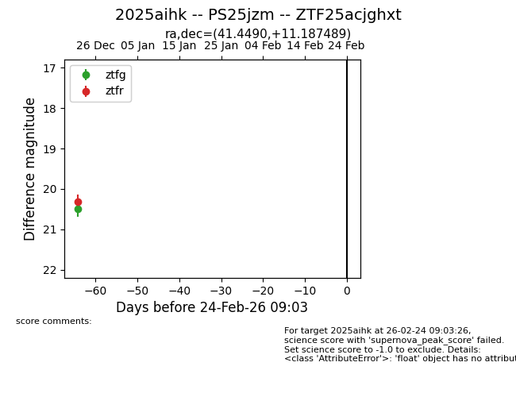
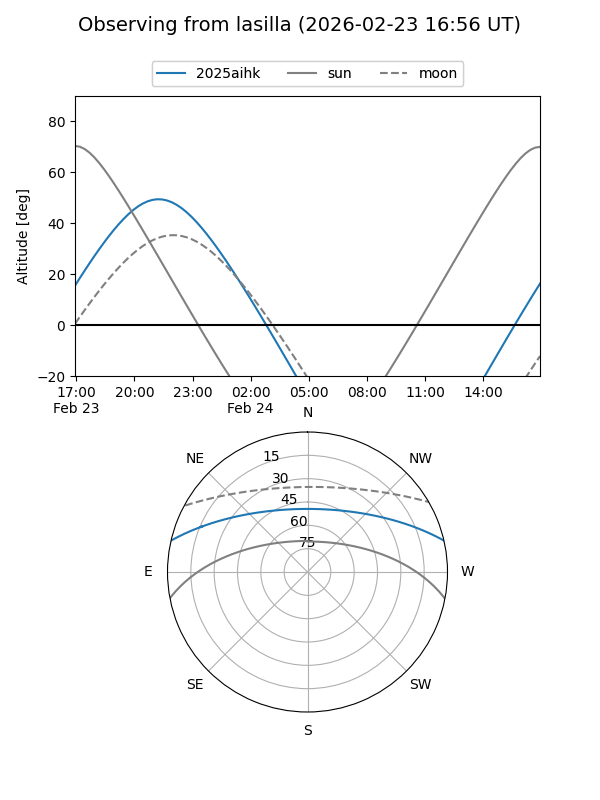
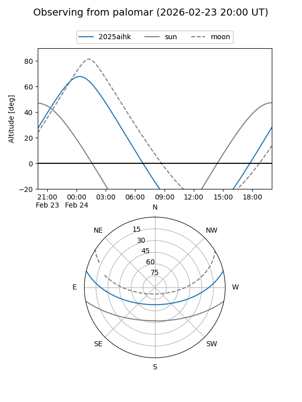

2025aihk
Target 2025aihk at 2025-12-26 13:01
Aliases and brokers:
FINK: fink-portal.org/ZTF25acjghxt
Lasair: lasair-ztf.lsst.ac.uk/objects/ZTF25acjghxt
ALeRCE: alerce.online/object/ZTF25acjghxt
TNS: wis-tns.org/object/2025aihk
YSE: ziggy.ucolick.org/yse/transient_detail/2025aihk
alt names
ZTF25acjghxt (ztf,fink_ztf)
2025aihk (tns,yse)
Coordinates:
equatorial (ra, dec) = 41.4490,+11.18749
equatorial (HMS+DMS) = 02:45:47.76,+11:11:14.96
galactic (l, b) = (162.6313,-42.69942)
Flags:
Photometry:
last ztfg=20.49, ztfr=20.31
1 ztfg, 1 ztfr detections
Lightcurve

Visibility


Additional plots